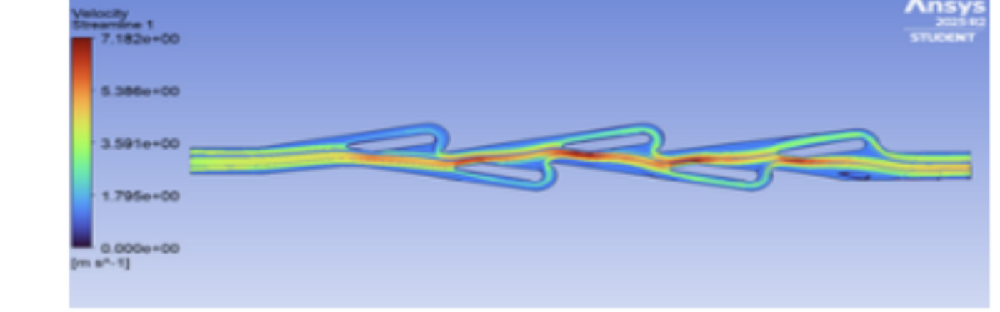
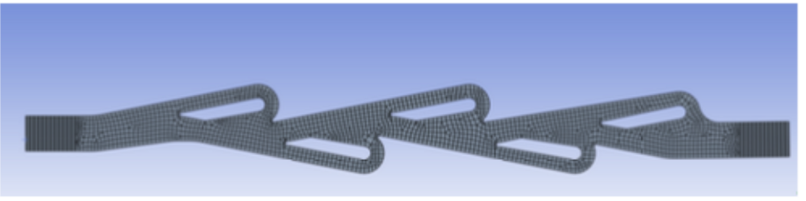
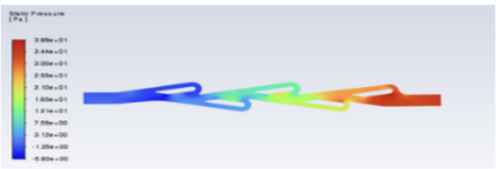
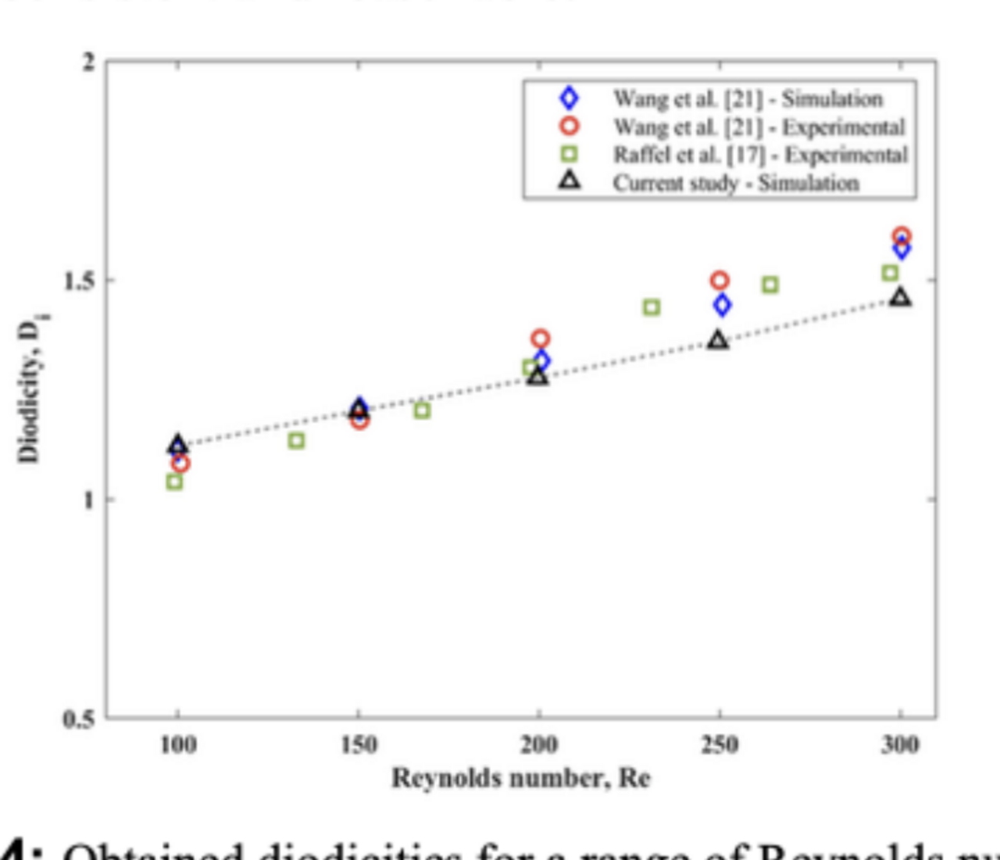
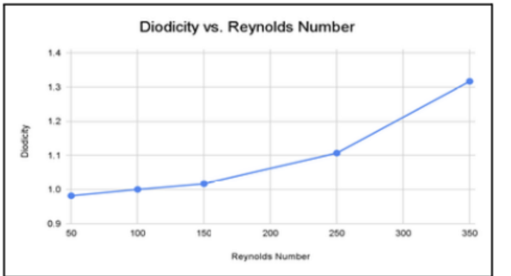
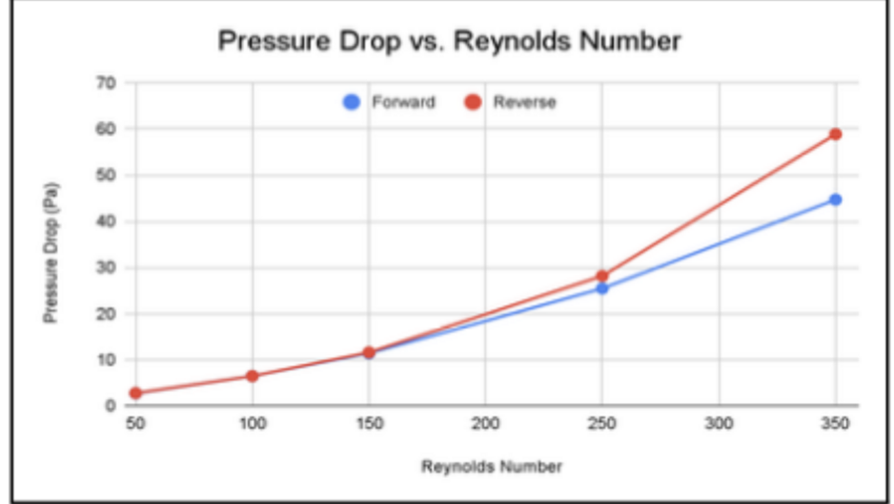
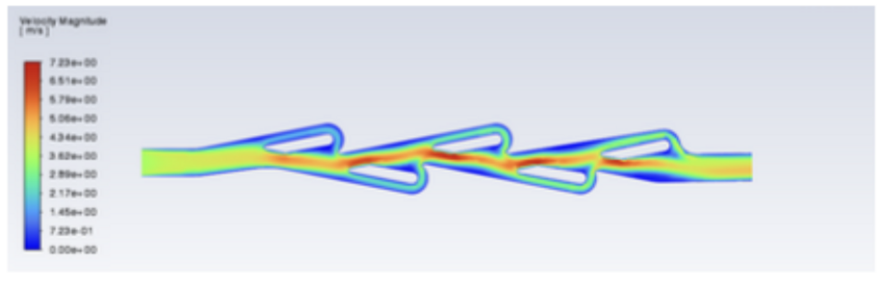
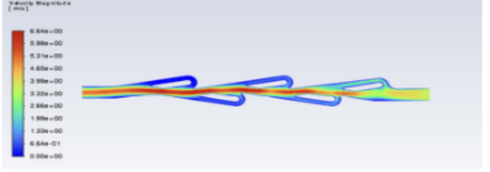

Tesla valve CFD analysis
A valve with no moving parts: quantifying how geometry and flow regime set its one-way resistance.

Problem
A Tesla valve resists flow in one direction using geometry alone — no seals, no moving parts, nothing to wear out. That makes it attractive for microfluidics and for any system where a mechanical check valve would fail. Its effectiveness is measured as diodicity, the ratio of reverse to forward pressure drop, and the open question was how strongly that figure depends on flow regime and on the number of repeating elements.
Approach
I built the planar valve geometry in Ansys Design Modeler and used split faces to discretize the inlet, repeating, and outlet regions separately. Meshing was quadrilateral- dominant at 2.5 mm element size with edge sizing at the inlet and outlet. Reynolds number was set by scaling inlet velocity against a 2 mm channel width, and each configuration was run in both forward and reverse flow so the pressure drops could be compared directly.


Results
The baseline valve reached a diodicity of 1.317 at Re = 300. Diodicity rose steadily with Reynolds number and fell below 1 near Re = 50, where viscous effects dominate and the geometry stops working as a diode at all. Adding repeating elements increased pressure drop in both directions.



| Mesh | Nodes | ΔP reverse (Pa) | ΔP forward (Pa) | Diodicity |
|---|---|---|---|---|
| Coarse (−50%) | 1288 | 54.78 | 43.27 | 1.266 |
| Baseline | 2576 | 58.90 | 44.72 | 1.317 |
| Fine (+50%) | 3864 | 59.01 | 45.67 | 1.292 |
The contours looked identical across all three meshes, but diodicity moved by about 4%, so the solution is not grid independent. Reporting that spread matters more than reporting a single number.
The redesign that failed
I modeled a cambered, airfoil-profiled insert on the theory that its pressure differential would divert reverse flow more aggressively. It did the opposite: diodicity dropped to 1.004 at Re = 250, against 1.107 for the original at the same condition. The velocity contours showed why — the profile never generated recirculation in the reverse branches, so nothing slowed the flow along the conduit. The angle of attack was likely too shallow.
What I’d do next
Run a proper angle-of-attack sweep on the cambered insert rather than testing a single profile, and extend the element-count study far enough to find where diodicity saturates. A finer mesh series would also pin down grid independence, which this study didn’t establish.


- Course
- MECE E3100
- Team
- 3 people
- Tools
- Ansys Fluent, Design Modeler
- Deliverable
- Technical report